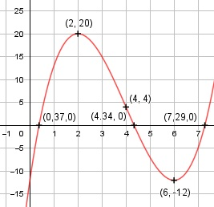

Aufgabe 43 f(x) = x3 - 12x2 + 36x - 12 f'(x) = 3x2 - 24x + 36, f''(x) = 6x - 24, f'''(x) = 6 Definitionsbereich: -∞ < x < ∞ Wertebereich: -∞ < f(x) < ∞ Asymptoten: - Symmetrie: - Nullstellen: x3 - 12x2 + 36x - 12 = 0 Wertetabelle: -1 0 1 2 3 4 5 -61 -12 13 20 15 4 -7 6 7 8 -12 -5 20 Vorzeichenwechsel zwischen 0 und 1 --> Nullstelle gewählt x01 = 0,5, Vorzeichenwechsel zwischen 4 und 5 --> Nullstelle gewählt x02 = 4,4, Vorzeichenwechsel zwischen 7 und 8 --> Nullstelle gewählt x03 = 7,2. Newtonsches Näherungsverfahren: fx0 x1 = x0 - ------- f'x0 (0,5)3 - 12 * (0,5)2 + 36 * 0,5 - 12 x1 = 0,5 - -------------------------------------- 3 * (0,5)2 - 24 * 0,5 + 36 x1 = 0,5 - 0,13 = 0,37 (4,4)3 - 12 * (4,4)2 + 36 * 4,4 - 12 x2 = 4,4 - -------------------------------------- 3 * (4,4)2 - 24 * 4,4 + 36 x2 = 4,4 - 0,06 = 4,34 (7,2)3 - 12 * (7,2)2 + 36 * 7,2 - 12 x3 = 7,2 - -------------------------------------- 3 * (7,2)2 - 24 * 7,2 + 36 x3 = 7,2 - (-0,09) = 7,29 N1(0,37|0), N2(4,34|0), N3(7,29|0) Schnittpunkt mit der y-Achse: f(0) = 03 - 12 * 02 + 36 * 0 - 12 = -12 Sy(0|-12) Extrempunkte: 3x2 - 24x + 36 = 0 A, B, C - Formel: A = 3, B = -24, C = 36 x1,2 = x1,2 = x1,2 = 24 ± 12 x1,2 = ---------- 6 x1 = 6, f(6) = 63 - 12 * 62 + 36 6 - 12 = -12 x2 = 2, f(2) = 23 - 12 * 22 + 36 * 2 - 12 = 20 f''(6) = 6 * 6 - 24 > 0 --> Tiefpunkt (6|-12) f''(2) = 6 * 2 - 24 < 0 --> Hochpunkt (2|20) Wendepunkt: 6x - 24 = 0 |+24 6x = 24| :6 x = 4, f(4) = 43 - 12 * 42 + 36 * 4 - 12 = 4, f'''(4) ≠ 0 --> Wendepunkt (4|4) Graph:
